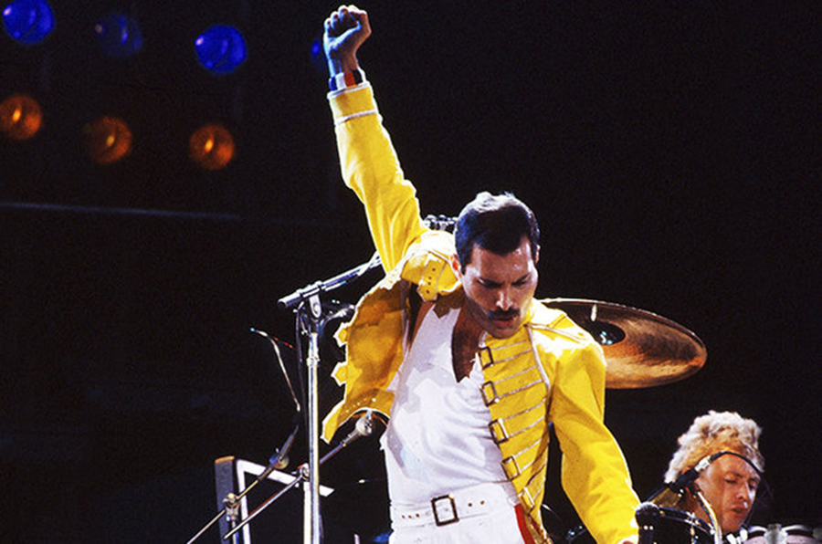
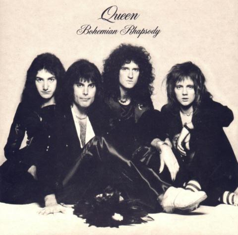
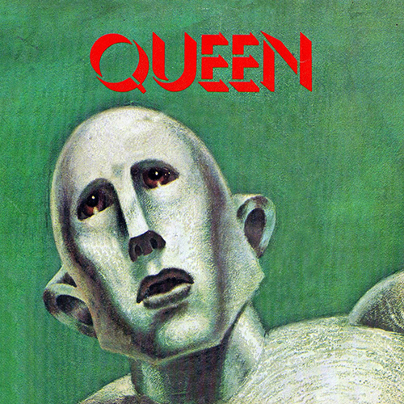
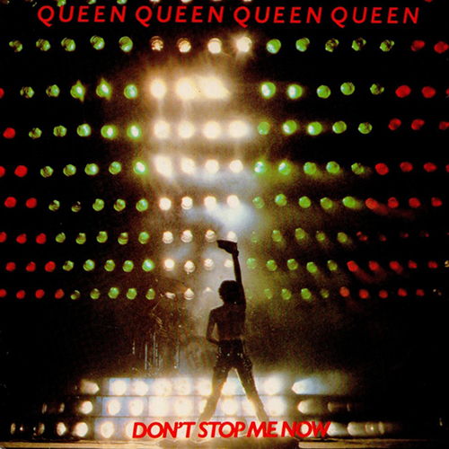

영국의 전설적인 밴드이자 록 역사상 가장 위대한 업적을 남긴 그룹 중 하나.
1970년대 중반부터 1990년대 초반까지 주로 활동하였으며,
현재까지도 세계적으로 많은 팬을 보유하고 있다.
그 시절 영국에는 두 명의 여왕이 있었다고 한다.

퀸은 1970년에 결성된 4인조 록밴드이다.
퀸은 1970년 밴드 스마일이 해체되자 구성원이었던 브라이언 메이와 로저 테일러에 보컬 프레디 머큐리가 합류하면서 결성된 그룹이다.
1971년 존 디콘(John Deacon)이 마지막으로 베이시스트로 영입되면서 퀸의 구성원이 완성되었다.
퀸은 아레나 록, 글램 록, 하드 록, 헤비 메탈, 프로그레시브 록 등 다양한 장르를 시도한 그룹이기도 하다.
Recommended Song

Bohemian Rhapsody
1975년 10월 31일에 발매된 네 번째 정규 앨범 A Night at the Opera 의 수록곡이다.
아카펠라, 발라드, 오페라, 하드 록 등 전혀 다른 장르들을 조합한 실험적 구성에도 불구하고
대중적으로 엄청난 성공을 거두었고, 퀸이 세계적인 밴드의 반열에 오르는 데 결정적 역할을 했다.

We are the champions
1977년 10월 7일에 발매된 앨범 News of the World 의 수록곡이다.
퀸을 상징하는 곡들 중 하나이며, 곡도 좋고 가사도 훌륭하여
스포츠 경기에서 스포츠 정신을 강조할 때 또는 우승 트로피를
드는 행사에 자주 나오는 노래이기도 하다.

Don't stop me now
1979년 1월 5일에 발매된 앨범 Jazz 의 수록곡이다.
프레디 머큐리 생전에는 퀸의 카탈로그에서 크게 비중있는 곡은 아니었다.
하지만 프레디 머큐리 사후 영국의 여러 광고나 방송에 삽입되면서 젊은 층을 중심으로
인기를 얻기 시작해 오늘날 '퀸'하면 떠오르는 대표적인 노래 중 하나가 되었다.